Attraction 観光名所


安平老街
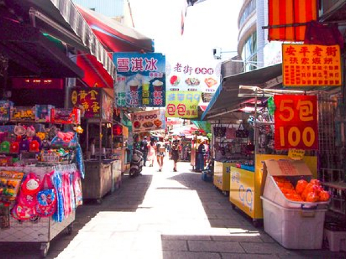
「台湾の京都」の異名をとる、古都・台南。かつて台湾の首都であったことから、重要な史跡が点在し、ノスタルジックなムードが漂っています。17世紀に造られた台湾最古の街は現在、台湾レトロとも称され数々の掘り出し物やお土産、飲食店が立ち並び写真スポットとしても人気の高いエリアになっています。
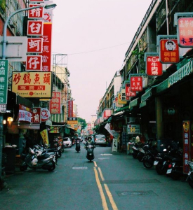
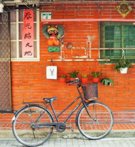
露店めぐりは日中、ノスタルジックな撮影は夜がおすすめです。
赤崁楼
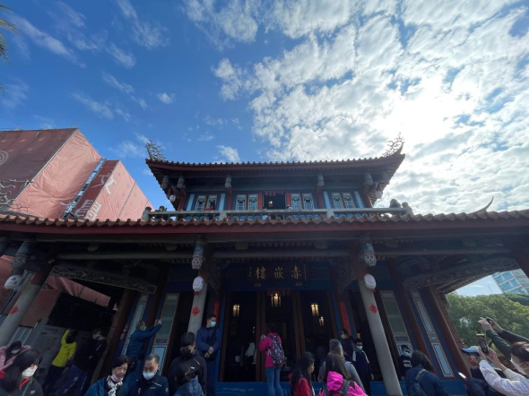
赤嵌楼（赤嵌樓）は台南中西区の代表的な古跡で、安平区の安平古堡と並んで台南の二大古跡になっています夜になると、赤嵌楼周辺には黄色いライトが灯り、古い建築物をより一層味わい深く演出します。前方の広場ではよく音楽会が催され、台南市民の夜の憩いの場になっています。赤嵌楼は、昼も夜も独特の魅力で楽しませてくれます。
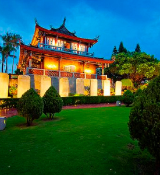
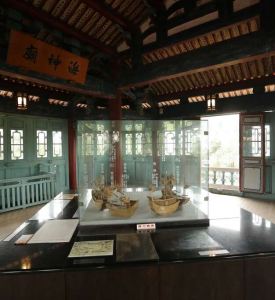
遅い時間帯はライトアップも楽しめます。
営業時間 8:30 ～ 21:30
Gourmet グルメ
グルメが有名な台湾において特に有名であり、台南でしか味わえないものをご紹介いたします。
担仔麺
タンツーメン
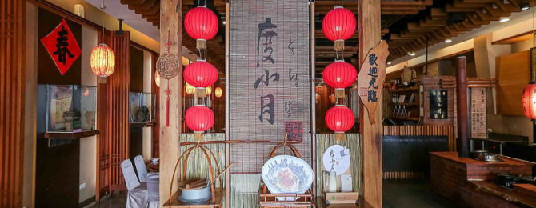
日本の台湾ラーメンの元祖とも言われるグルメ。中でも「度小月」は各地に支店を持つ人気店。台南ではその度小月本店があり連日大人気です。
蝦仁飯
エビ飯
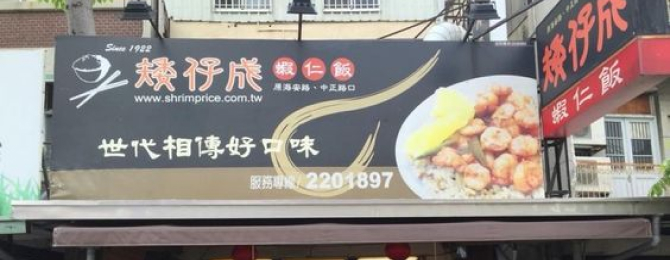
台南10大美食にも選ばれている代表料理。中でも有名なのが「矮仔成」。台湾でも台南に来ないと味わえない料理で日本人が大好きな味です。
小籠包
ショウロンポー
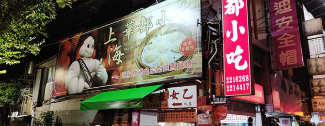
台湾料理のといえば小籠包。台南にある「上海華都小吃」は、ミシュラン掲載実績や台湾政府から表彰されている元祖「松針小籠包」誕生の地です。
鴨肉飯
ヤーロウファン
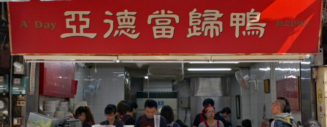
小吃（シャオチー）と呼ばれる台湾の軽食文化、その中でも人気な一品が「亞德當歸鴨」の鴨肉飯。やすい・はやい・うまいの原点です。
Pickup ピックアップ
蓮と温泉の国 白河
きらびやかな都心や歴史情緒ある台湾。そんな台湾のもう一つの楽しみ方が自然に囲まれながらの観光です。観光客の少ない所でゆっくり楽しみたい方におすすめです。
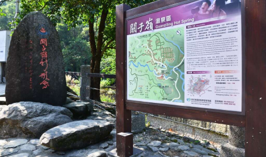
温泉名：関仔嶺温泉
（グァンズーリン・ウェンチュエン）
台湾4大温泉地の一つで、白河周辺には数々のホテルがあり、温泉を楽しむことができます。このエリアは泥温泉が有名で国内外問わず女性に大人気です。
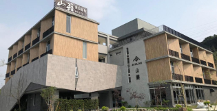
温泉宿は最新のホテルから老舗の旅館まで多種多様に揃っています。
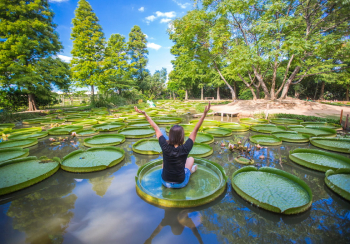
蓮の実の生産で台湾全土の3分の2の生産量を占める「蓮のふるさと」。美しい白河で癒しの時間をお過ごしください。
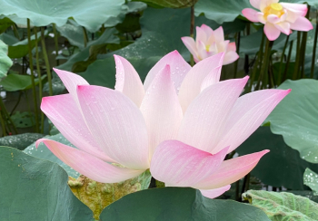